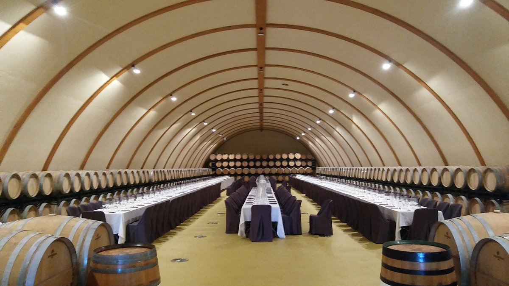

Inauguramos nuestra renovada sala de catas con tecnología de vanguardia y diseño premium. Tierra de Cubas no es solo un espacio físico, es una nueva forma de entender y sentir el vino en Cariñena.
Tras meses de reformas y una visión clara de elevar la experiencia del cliente, Tierra Vieja presenta con orgullo "Tierra de Cubas". Este nuevo santuario del vino combina la robustez de la piedra tradicional de nuestras bodegas con la elegancia del acero y el cristal, creando un ambiente donde el pasado y el futuro se encuentran.
La sala ha sido diseñada para estimular cada uno de los sentidos. Desde la iluminación tenue que resalta los matices del vino, hasta la acústica controlada que permite apreciar las notas de cata sin interferencias, cada detalle ha sido pensado para el máximo disfrute del visitante.
"Tierra de Cubas representa nuestra apuesta por la excelencia. Queríamos un lugar donde el vino fuera el protagonista absoluto, apoyado por una arquitectura que respeta nuestra historia." — Elena Benedí, Directora de Experiencia Cliente
Innovación tecnológica y diseño
Para esta nueva etapa, hemos incorporado soluciones tecnológicas que sitúan a Tierra de Cubas a la vanguardia del enoturismo nacional:
Mesas Inmersivas
Tecnología táctil que permite conocer el origen de cada parcela mientras degustas el vino que produce.
Clima Inteligente
Sistemas de control que aseguran la oxigenación y temperatura óptima para cada varietal en tiempo real.
Diseño Bioclimático
Arquitectura integrada que aprovecha la inercia térmica de la bodega tradicional para un consumo sostenible.
Una experiencia personalizada
La nueva sala permite ofrecer catas personalizadas para pequeños grupos, eventos corporativos y presentaciones exclusivas. Los sumilleres de la casa guiarán a los asistentes a través de un recorrido sensorial que incluye desde nuestros vinos más jóvenes hasta las añadas históricas que descansan en nuestra sacristía.
Además, Tierra de Cubas servirá como centro de formación para aquellos que deseen profundizar en la cultura de la D.O. Cariñena, con talleres especializados y encuentros con nuestros propios enólogos.
"Inaugurar este espacio es cumplir un sueño generacional: dar a nuestros vinos el escenario de gala que merecen." — Carlos Benedí, Enólogo

Reservas y horarios
Tierra de Cubas estará abierta al público general para visitas guiadas y catas programadas a partir de la próxima semana. Debido a la naturaleza exclusiva de las experiencias, se recomienda realizar reserva previa a través de nuestro calendario online.
Consulta disponibilidad y packs especiales de lanzamiento en nuestra sección de Actualidad y Eventos. ¡Ven a descubrir el nuevo corazón de Tierra Vieja!